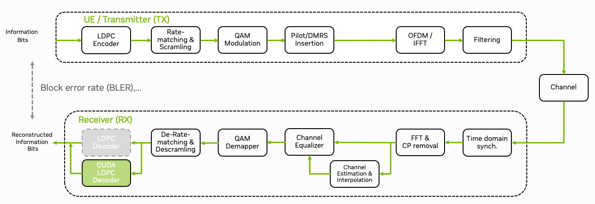

GPU-Accelerated LDPC Decoding#
{kind=link}

Fig. 21 Schematic overview of the 5G NR PUSCH. Note that this is a simplified view showing only the relevant components for the following tutorials and uses the Sionna naming convention. For simplicity, the HARQ process and MIMO aspects are not shown.#
In this tutorial, we will show how the low-density parity-check (LDPC) decoder of the physical layer can be accelerated using CUDA. The 5G NR LDPC code design is described in [Richardson2018]; for reduced-complexity decoding we refer to [Chen2005], and for hardware acceleration context to [Romani2020]. As wireless communications is a latency critical application, we will also discuss the performance implications of different memory sharing patterns between the CPU and the GPU. The unified CPU/GPU architecture of DGX Spark and Jetson AGX Thor allows for efficient inline acceleration without the need of explicit memory transfers. For a more detailed discussion on different acceleration techniques, we refer the interested reader to [Kundu2023B].
You will learn:
How to accelerate the LDPC decoder using CUDA
The conceptual difference between inline and lookaside acceleration
Different memory transfer patterns and their performance implications
Note
The source code of this tutorial can be found in plugins/ldpc_cuda/src/runtime/ldpc_decoder.cu.
References#
L. Romani, “Hardware Acceleration of 5G LDPC using Datacenter-class FPGAs,” Politecnico di Torino, 2020.
M. Pretti, “A Message Passing Algorithm with Damping,” J. Statist. Mech.: Theory Practice, p. 11008, Nov. 2005.
E. Nachmani, Y. Be’ery and D. Burshtein, “Learning to Decode Linear Codes Using Deep Learning,” IEEE Annual Allerton Conference on Communication, Control, and Computing, pp. 341-346., 2016.
L. Kundu, et al., “Hardware Acceleration for Open Radio Access Networks: A Contemporary Overview,” IEEE Communications Magazine, vol. 62, no. 9, pp. 160-167, 2023.
J. Chen, et al., “Reduced-complexity Decoding of LDPC Codes,” IEEE Transactions on Communications, vol. 53, no. 8, Aug. 2005.
T. Richardson and S. Kudekar, “Design of Low-density Parity-check Codes for 5G New Radio,” IEEE Communications Magazine, vol. 56, no. 3, pp. 20-27, 2018.